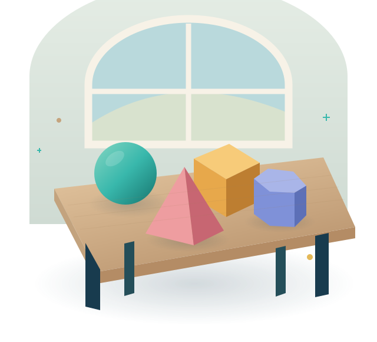

Entra y comienza
Abre el laboratorio en Meta Quest Browser, entra en VR con las manos o los mandos. Pulsa «Comenzar» en el panel.
UN ESPACIO PARA APRENDER CON LAS MANOS
Observa, toma y clasifica. Explora un laboratorio inmersivo donde las formas tienen peso y cada movimiento cuenta.
Vista previa de escritorio no inmersiva · VR desde el laboratorio

DE LA OBSERVACIÓN A LA INTERACCIÓN
Cuatro mesas, cuatro recipientes y un reto sencillo: encontrar el lugar de cada forma.
Abre el laboratorio en Meta Quest Browser, entra en VR con las manos o los mandos. Pulsa «Comenzar» en el panel.
Pellizca con los dedos o aprieta el gatillo del mando para tomar una figura. Muévela con calma y suéltala por la boca de su recipiente.
La pieza debe quedar dentro y en reposo. Completa las veinte y consulta tu precisión y tus tiempos.
TU ESPACIO DE EXPERIMENTACIÓN
Cargando capacidades WebXR…
0/20 · preparado
Pulsa Comenzar para iniciar
En PC: arrastra una pieza con el ratón; usa la rueda mientras la sujetas para acercarla o alejarla. Cambia de vista para inspeccionar. Esta prueba no sustituye el seguimiento de manos en el visor.
Seguimiento de manos activado, navegador compatible con WebXR y conexión a internet. Juega en una zona despejada, con cámara estable y sin desplazamiento artificial.